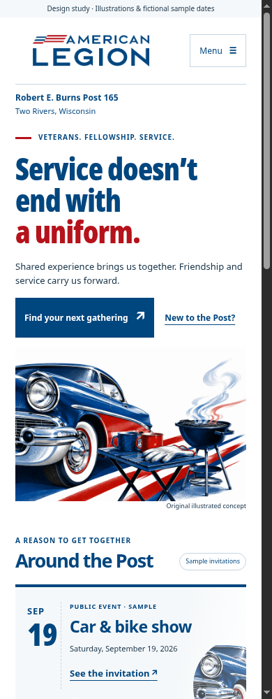

Concept A
Saturday at the Post
Illustrated Americana, event invitations, and a sociable, lively character.

The same purpose and practical information. Two different visual personalities.
Design studies. Illustrations are fictional; sample dates are not event announcements. Contact and attendance details await confirmation.